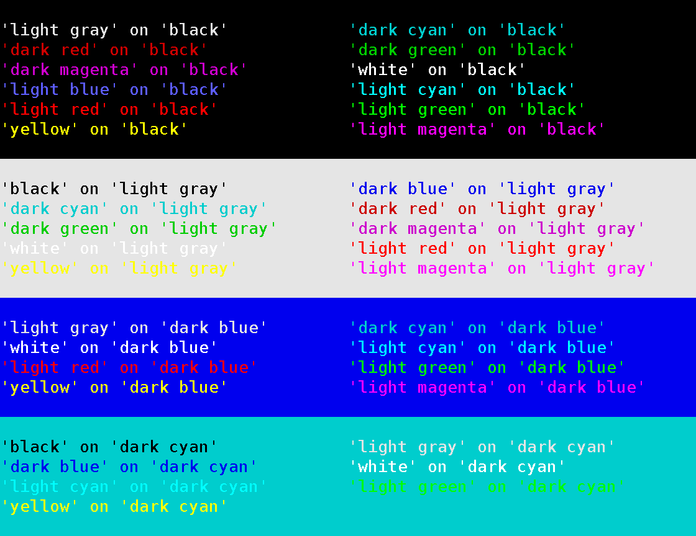
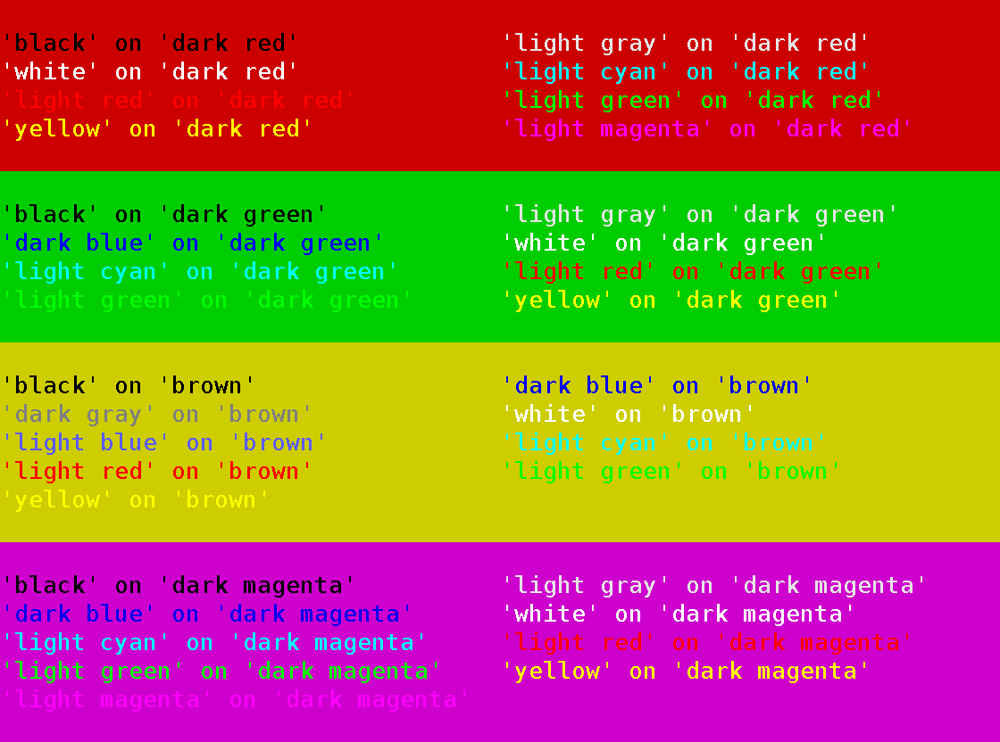

Display Attributes¶
Urwid supports a number of common display attributes in monochrome, 16-color, 88-color, 256-color, and 24-bit (true color) modes.
You are encouraged to provide support for as many of these modes as you like, while allowing your interface to degrade gracefully by providing command line arguments or other interfaces to switch modes.
When setting up a palette with MainLoop (or directly
on your screen instance), you may specify attributes for 16-color, monochrome
and high color modes. You can then switch between these modes with
screen.set_terminal_properties(),
where screen is your screen instance or MainLoop.screen.
The same method turns on terminal hyperlinks with hyperlinks=True (see Hyperlinks).
See also
Using Display Attributes¶
Once you have defined a palette you may use its display attribute names
anywhere that expects a display attribute. When no display attribute is defined
None is used as a default display attribute.
None will typically be rendered with the terminal’s default foreground and
background colors.
You can also specify an exact foreground and background using an
AttrSpec instance instead of a display attribute name.
Using AttrSpec instances in your code may be trickier than using your
screen’s palette because you must know which mode (number of colors) the screen is in.
Text Markup¶
A Text widget can specify which display attributes each part of the
text will use with the format defined in Text class reference.
Some examples:
Text(u"a simple string with default attribute")
The string and space around will use the None default display attribute
which usually appears in the terminal’s default foreground and background.
Text(('attr1', u"a string in display attribute attr1"))
The string will appear with foreground and backgrounds specified in the display
module’s palette for 'attr1', but the space around (before/after) the text
will appear with the default display attribute.
Text([u"a simple string ", ('attr1', u"ending with attr1")])
The first three words have the default display attribute and the last three words have
display attribute 'attr1'.
Text([('attr1', u"start in attr1 "), ('attr2', u"end in attr2")])
The first three words have display attribute 'attr1' and the last three words have
display attribute 'attr2'.
Text(('attr1', [u"nesting example ", ('attr2', u"inside"), u" outside"]))
When markup is nested the inner attribute is placed over the outer one. Here "inside"
has attribute 'attr2' and all the rest of the text has attribute
'attr1'. A color that 'attr2' leaves to 'inherit' is taken from 'attr1'
(see Inherited Foreground and Background). Text.get_text() returns such a run as
LayeredAttr('attr2', 'attr1').
Assigning Display Attributes with AttrMap¶
If you want a whole widget to be assigned a display attribute, or if you want to change
one or more display attributes to other display attributes, you can wrap your widget
in an AttrMap widget. Text widgets have no way to specify
a display attribute for the whitespace around the text caused by alignment and wrapping
so AttrMap may be used. Some examples:
AttrMap(Text(u"hello"), 'attr1')
The whole Text widget will have display attribute 'attr1' including
whitespace around the "hello" text.
AttrMap(Text(('attr1', u"hello")), 'attr2')
The u"hello" text will appear with display attribute 'attr1' and all surrounding
whitespace will appear with display attribute 'attr2'.
AttrMap(Text([('attr1', u"hello"), u" world"]), {'attr1': 'attr2'})
The AttrMap widget will apply display attribute 'attr2' to all parts of
the Text widget that are using 'attr1'. The result is the "hello"
text appearing with display attribute 'attr2' and all other text and whitespace
appearing in the default display attribute.
The attributes of the wrapped widget are placed over the attribute AttrMap gives to
None, so a color they leave to 'inherit' is taken from it:
AttrMap(Pile([Text(('red_fg', u"error")), Text(u"plain")]), 'panel_bg')
With ('red_fg', 'dark red', 'inherit') and ('panel_bg', 'inherit', 'dark blue') in the
palette, "error" is dark red and all other text and whitespace is in the default foreground,
everything on dark blue.
AttrMap can also change display attributes differently when they are in focus.
This can be used to “highlight” one or more widgets to make your interface more
user friendly. To use this feature set the focus_map parameter when creating the
AttrMap widget.
Foreground and Background Settings¶
Supported by Terminal |
xterm / gnome-term |
rxvt |
linux console |
others |
|---|---|---|---|---|
YES |
YES |
YES |
very widely supported |
|
YES |
YES |
YES |
very widely supported |
|
YES |
YES |
YES |
widely supported |
|
YES |
YES |
standout |
widely supported |
|
YES |
YES |
NO |
widely supported |
|
YES/NO |
NO |
NO |
some support |
|
YES |
NO |
NO |
some supported |
|
YES |
NO |
NO |
some support |
|
YES |
urxvt |
some support |
||
YES |
some support |
|||
w/palette setting |
urxvt |
limited support |
||
YES |
limited support |
16 Standard Foreground Colors¶
'black''dark red''dark green''brown''dark blue''dark magenta''dark cyan''light gray''dark gray''light red''light green''yellow''light blue''light magenta''light cyan''white'
8 Standard Background Colors¶
'black''dark red''dark green''brown''dark blue''dark magenta''dark cyan''light gray'
Default Foreground and Background¶
'default'(or simply'')
'default' may be specified as a foreground or background to use a
terminal’s default color. For terminals with transparent backgrounds
'default' is the only way to show the transparent background. There is no
way to tell what the default colors are, so it is best to use default
foregrounds and backgrounds together (not with other colors) to ensure good
contrast.
Inherited Foreground and Background¶
'inherit'
'inherit' may be specified as a foreground or background color (with settings:
'inherit,bold') to take that color from the enclosing display attribute: the
attribute of the outer markup, or the attribute an AttrMap around the widget gives to
None. With nothing enclosing it, the color comes from the None palette entry, so
registering (None, 'default', 'dark magenta') gives every attribute with an 'inherit'
background a dark magenta background. A color is resolved separately for each run of text, so
the text after a run with its own background shows the enclosing background again.
This lets a few foreground-only and background-only palette entries replace an entry for every
combination of them. To highlight the focused row of a list whose text uses many foreground
colors, give those entries an 'inherit' background and wrap each row:
palette = [
('method', 'light green', 'inherit'),
('size', 'brown', 'inherit'),
('focus_bg', 'inherit', 'dark blue'),
]
row = AttrMap(Columns([Text(('method', u"GET")), Text(('size', u"1k"))]), None, focus_map='focus_bg')
When an attribute inherits a color, a setting ('bold', 'underline', …) it does not
mention is taken from the enclosing attribute, and 'no-' turns one off: with
('plain', 'inherit,no-bold', 'inherit') inside a bold attribute, the text is not bold. An
attribute that sets both colors, including 'default' and '', hides the enclosing
attribute completely, settings included. Attributes are combined from the outermost inward, so
each one keeps what all of the attributes around it set. ANSIText turns an SGR reset
such as ESC[24m into 'no-underline', so the reset also applies to the enclosing attribute.
It keeps bold apart from the color: ESC[1;31m is 'dark red,bold', which the raw display draws
in light red where the terminal shows bold text in bright colors.
A change to a palette entry shows on the next MainLoop.draw_screen(), and neither the
widgets nor the screen have to be redrawn for it: the raw and web displays compare each drawn
row by its resolved colors and write again only the rows whose colors changed, and curses
writes every row on each draw.
AttrSpec.layered_over() combines two specifications. Canvases record the enclosing
attributes as a LayeredAttr; a custom display module turns any canvas attribute into an
AttrSpec with BaseScreen.resolve_attr() instead of reading the palette itself.
An AttrMap can replace a LayeredAttr as a whole by using it as a key.
Code written for earlier releases sees these differences, also with palettes that never use
'inherit':
Nested markup and attributes inside an
AttrMapappear asLayeredAttrinText.get_text()and in canvas content, where they used to be the innermost name.A display module that reads
self._paletteitself shows layered attributes in default colors; it callsBaseScreen.resolve_attr()instead.An attribute an
AttrMapmaps toNoneshows the map’sNoneattribute.AttrSpec.copy_modified()withoutcolorskeeps the 88-color or true-color mode of the specification, and uses 256 colors otherwise, instead of the fewest colors it needs.
Bold, Underline, Standout¶
'bold''underline''standout''blink''italics''strikethrough''faint'
These settings may be tagged on to foreground colors using commas, eg: 'light
gray,underline,bold,strikethrough'. 'no-' in front of one turns it off over an enclosing
attribute (see Inherited Foreground and Background).
For monochrome mode combinations of these are the only values that may be used.
Many terminals will turn foreground colors into their bright versions when you
use bold, eg: 'dark blue,bold' might look the same as 'light blue'.
Some terminals also will display bright colors in a bold font even if you don’t
specify bold. To inhibit this you can try setting bright_is_bold=False with
BaseScreen.set_terminal_properties(), but it is not always supported.
'standout' is usually displayed as the foreground and background colors reversed.
Hyperlinks¶
Text can be drawn as a terminal hyperlink (OSC 8), which the user opens by clicking it.
A link is not part of a palette entry: it belongs to a run of text, so it is an AttrSpec
with the hyperlink keyword.
Its colors default to 'inherit', so it can be placed inside any other display attribute:
Text([("bold", (AttrSpec(hyperlink="https://urwid.org"), "urwid"))])
The text keeps the colors and settings of "bold" and gains the link.
An attribute without a link takes the link of the attribute around it, and
NO_HYPERLINK turns it off: AttrSpec(hyperlink=NO_HYPERLINK) inside a link is drawn unlinked.
Hyperlink also takes an id, which makes the terminal highlight several separate runs as one link.
A URI or id outside printable ASCII is refused, so a link cannot write other escape sequences to the terminal.
ANSIText and Terminal turn the OSC 8 sequences in their input into such attributes.
SGR sequences, ESC[0m included, leave the link in place, as they do in a terminal.
An OSC 8 sequence urwid refuses ends the current link, so the text after it does not point at the previous target.
The raw display draws links only after
screen.set_terminal_properties(hyperlinks=True).
No terminal query for OSC 8 support exists, and a terminal without it may show the link sequences as text,
so an application turns links on when it knows its terminal supports them.
These terminals support OSC 8:
VTE 0.50 and later (GNOME Terminal, Tilix and others)
iTerm2 3.1 and later
kitty 0.19 and later
WezTerm
foot 1.7 and later
Alacritty 0.11 and later
Windows Terminal 1.4 and later
Konsole, when turned on in its settings
Ghostty
mintty 2.9.7 and later
the VS Code terminal 1.72 and later
tmux 3.4 and later, with
set -as terminal-features "*:hyperlinks"
GNU screen does not support it.
The curses and LCD displays draw linked text without the link.
The HTML screenshot and web displays turn a link into an <a> element when its scheme is
http, https, mailto, sftp or file, and draw any other link as plain text,
since a scheme such as javascript would run script in the page.
An application can also write OSC 8 bytes itself, in a canvas run with the "U" character set.
The raw display writes such a run unchanged: the link it opens belongs to the application, which also closes it.
urwid’s own links wrap only the runs whose attribute has a link, and the next such run after a "U" run
opens its link again.
“Bright” Background Colors¶
Warning
Terminal support for bright background colors is spotty, and they generally
should be avoided. If you are in a high-color mode you might have better luck
using the high-color versions 'h8', 'h9', 'h10', …, 'h15'.
'dark gray''light red''light green''yellow''light blue''light magenta''light cyan''white'
24-Bit Foreground and Background Colors¶
In 24-bit color mode, any hex color code of the form #rrggbb can be used to specify a precise RGB value for foreground and background colors. Support for 24-bit color mode varies widely among terminal programs. Furthermore, terminal multiplexers such as tmux and screen can sometimes interfere with the operation of 24-bit color mode unless properly configured.
See also
The palette_test.py example program
256-Color Foreground and Background Colors¶
In 256-color mode you have the 16 basic colors, a 6 * 6 * 6 color cube and a gray scale with 24 entries (white and black not included).
The color cube is weighted towards the brighter colors, with RGB points at 0,
0x5f, 0x87, 0xaf, 0xd7 and 0xff.
The hex characters '0', '6', '8', 'a', 'd' and
'f' are used as short-forms for these values.
High colors may be specified by their index 'h0', …, 'h255' or with the
shortcuts for the color cube '#000', '#006', '#008', …, '#fff' or
gray scale entries 'g0' (black from color cube) , 'g3', 'g7', …
'g100' (white from color cube).
See also
The palette_test.py example program
88-Color Foreground and Background Colors¶
In 88-color mode you have the 16 basic colors, a 4 * 4 * 4 color cube and a gray scale with 8 entries (white and black not included).
The color cube is weighted towards the brighter colors, with RGB points at 0,
0x8b, 0xcd, and 0xff. The hex characters '0', '8', 'c'
and 'f' are used as short-forms for these values.
High colors may be specified by their index 'h0', …, 'h87' or with the
shortcuts for the color cube '#000', '#008', '#00c', …, '#fff' or
gray scale entries 'g0' (black from color cube), 'g19', 'g35', …
'g100' (white from color cube).
See also
The palette_test.py example program
RGB Palette Setting¶
A few terminals have the ability to customize the terminal palette’s RGB
values with display.raw.Screen.modify_terminal_palette().
There is no automatic way to tell if this is supported by a user’s
terminal, so this feature shouldn’t be relied on.
Most terminals take the xterm OSC 4 sequence.
On the Linux console (TERM=linux and its variants) the console’s own sequence is used instead,
which covers only the 16 basic colors: entries 16-255 are skipped there.
Check which terminal is in use (Screen.term) before relying on a modified palette.
The modified entries are reset to the terminal’s default when the screen stops;
the Linux console resets all 16 entries, and fbterm, which has no reset sequence, keeps them.
display.raw.Screen.reset_default_terminal_palette() is used to
reset the palette in the palette_test.py example program when switching modes.
Recommended Combinations¶
Neutral Backgrounds¶


Choose colors that are fairly neutral with medium contrast for most of your application. It is good to use one background as a default for text, another for edit boxes and a third for selected edit boxes.
Foreground colors shown here in bold text will appear as bold text on many terminals. Bold fonts are often more difficult to read so those foreground colours should be used sparingly.
Bright Backgrounds¶


Use bright colors to draw attention to small areas with important information. They are good for buttons and selected widgets (other than edit boxes).